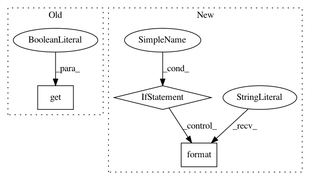

d6376d9c4aa3aea31dcf07e65e35125d7f091c2f,snorkel/learning/disc_learning.py,TFNoiseAwareModel,load,#TFNoiseAwareModel#,83
Before Change
self._build(**kwargs)
saver = tf.train.Saver()
saver.restore(self.session, "{0}.meta".format(model_name))
if kwargs.get("verbose", False):
print("[{0}] Loaded model <{1}>".format(self.name, model_name))
After Change
load_dict = self._build()
saver = tf.train.Saver(load_dict)
ckpt = tf.train.get_checkpoint_state("./")
if ckpt and ckpt.model_checkpoint_path:
saver.restore(self.session, ckpt.model_checkpoint_path)
if verbose:
print("[{0}] Loaded model <{1}>".format(self.name, model_name))
else:
raise Exception("[{0}] No model found at <{1}>".format(
self.name, model_name
))
def get_train_idxs(marginals, rebalance=False, split_lo=0.5, split_hi=0.5):
pos = np.where(marginals < (split_lo - 1e-6))[0]
neg = np.where(marginals > (split_hi + 1e-6))[0]
if rebalance:
In pattern: SUPERPATTERN
Frequency: 3
Non-data size: 3
Instances
Project Name: snorkel-team/snorkel
Commit Name: d6376d9c4aa3aea31dcf07e65e35125d7f091c2f
Time: 2017-01-15
Author: henry.ehrenberg@outlook.com
File Name: snorkel/learning/disc_learning.py
Class Name: TFNoiseAwareModel
Method Name: load
Project Name: galeone/dynamic-training-bench
Commit Name: 0a68639f4c33323274e7829b9349d0170dc6c8ea
Time: 2017-02-08
Author: nessuno@nerdz.eu
File Name: evaluate.py
Class Name:
Method Name:
Project Name: DistrictDataLabs/yellowbrick
Commit Name: 708274289d66d9265f7ded03e3445bc2bd70f46e
Time: 2019-01-01
Author: benjamin@bengfort.com
File Name: yellowbrick/download.py
Class Name:
Method Name: download_data